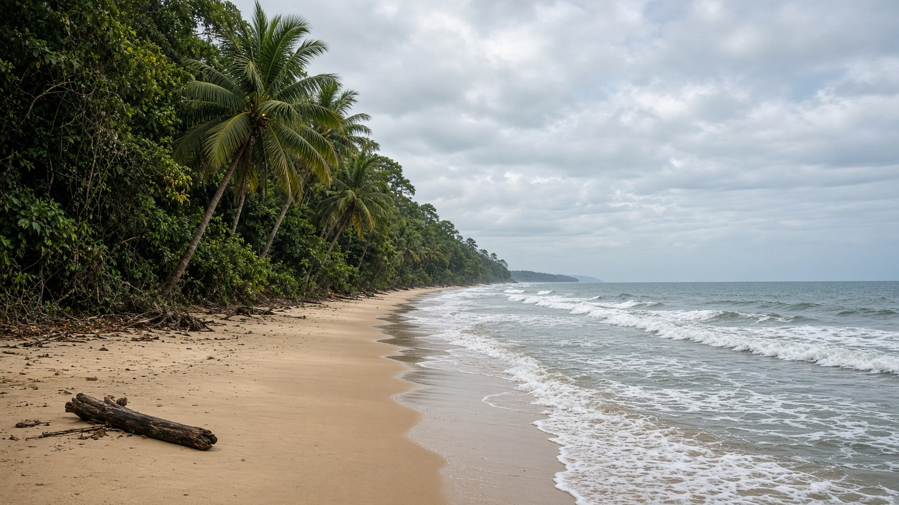

أفريقيا
الغابون
Gabon
غابات الاستواء على الأطلسي.
- العاصمة
- ليبرفيل
- نظام الحكم
- جمهورية
- التأسيس / الاستقلال
- 17 أغسطس 1960
- النوع
- جمهورية
منذ التأسيس
استقلت الغابون في 17 أغسطس 1960. جمهورية عاصمتها ليبرفيل.
معالم
- طبيعةمنتزه لوا
فيلة الشاطئ.
- معلمليبرفيل
العاصمة.
- طبيعةشلالات كوانغو
داخل.